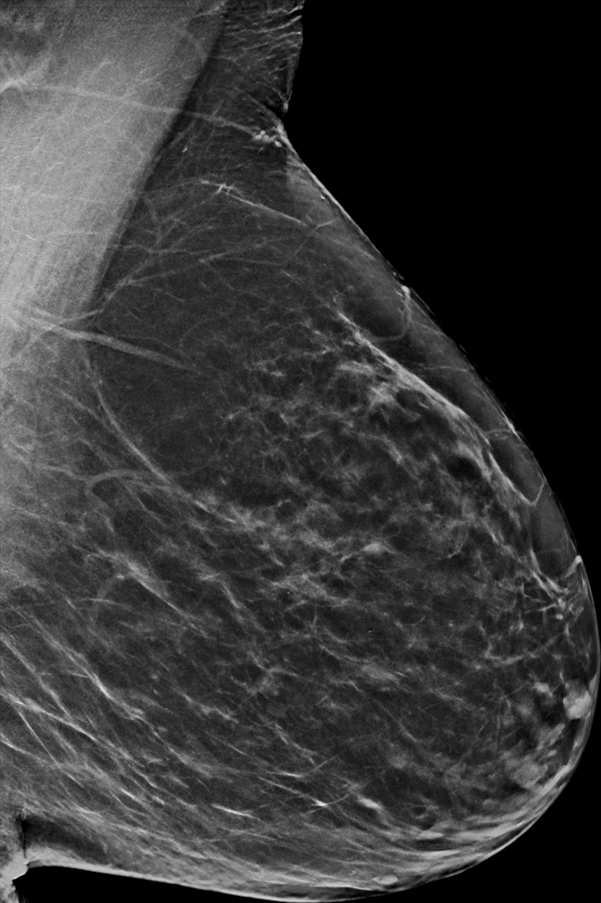
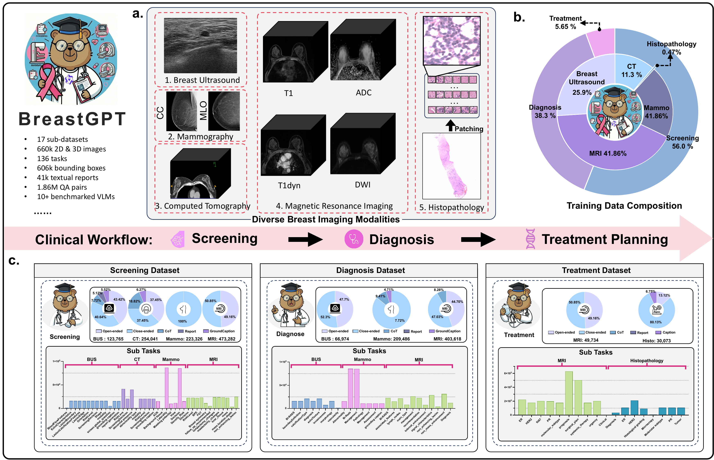
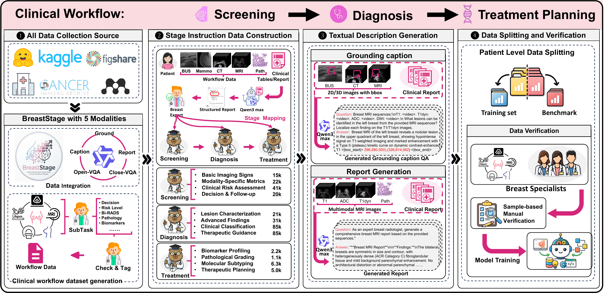
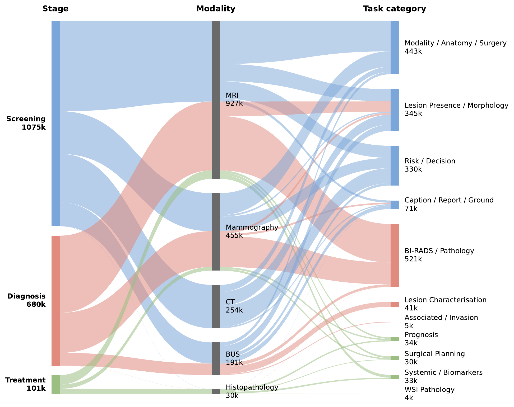
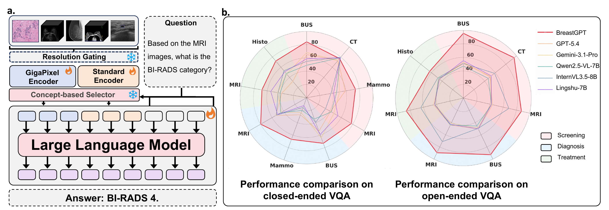
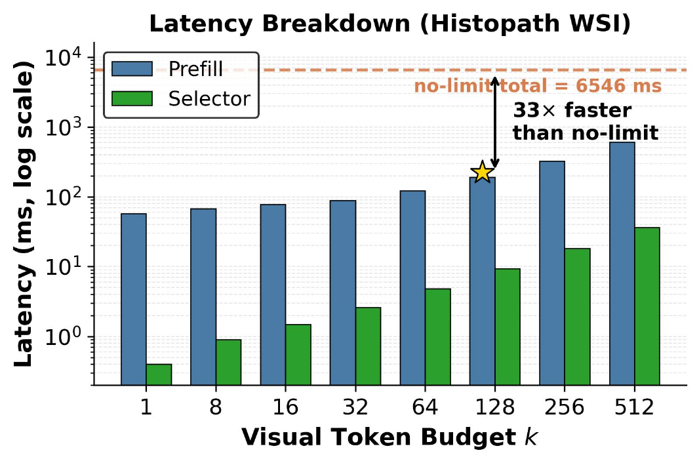
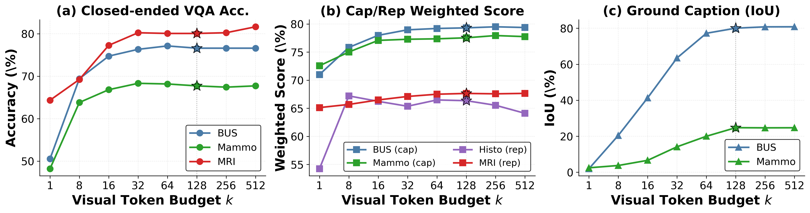
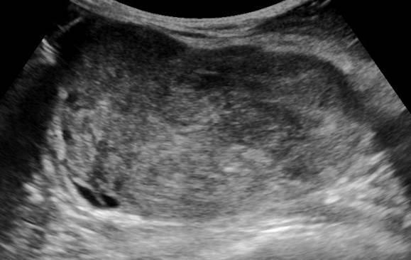
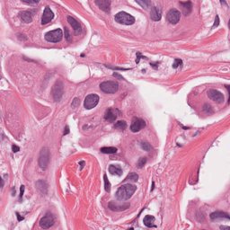

Patient
new breast complaint



One backbone, three stage-specialist agents — Screening, Diagnosis, and Treatment-Planning — orchestrated end-to-end along the breast cancer care continuum.


BreastGPT treats breast oncology as a patient-level trajectory rather than a single image task. A shared multimodal backbone is steered by an Orchestrator that decides — based on the current evidence state — which stage-agent (Screening / Diagnosis / Treatment) acts next, and aggregates every agent's output into one evolving clinical record.
An Orchestrator decides which stage-agent should act next, aggregates its output, and preserves the accumulated patient context.
BreastStage aligns 1.86M instruction pairs with the real screening-to-treatment pathway.
A shared backbone handles standard radiology and gigapixel pathology without stage-specific models.
A single Orchestrator builds the patient-level trajectory: at each step it inspects the current evidence state, selects the stage-agent whose clinical role matches, and aggregates the returned output back into the shared record.
All three agents share one Qwen3-VL-8B backbone and one weights checkpoint. The orchestrator changes the stage-conditioned persona and output schema, then appends the result back into the same patient trajectory.
BreastStage is a workflow-aligned corpus with ≈662K images, 606K boxes/masks, and 1.86M instruction-following pairs across screening, diagnosis, and treatment planning.


BreastGPT combines a shared multimodal backbone with stage prompts, modality-aware perception, and compact visual memory.

The Orchestrator switches the agent's clinical role across screening, diagnosis, and treatment planning while keeping one model checkpoint.
Standard radiology and gigapixel pathology are routed through different visual branches before entering the same language model.
Large visual inputs are compressed to k = 128 clinically relevant tokens, making WSI reasoning practical at inference time.
A single training recipe aligns visual features first, then teaches the full workflow across modalities and clinical stages.
On BreastStage-Bench, BreastGPT outperforms proprietary frontier agents, open-source VLMs, and medical-specific VLMs across the full clinical workflow.
| Model | #P | Screening | Diagnosis | Treatment | Closed Avg | Open Avg | |||||
|---|---|---|---|---|---|---|---|---|---|---|---|
| BUS | CT | Mam | BUS | Mam | MRI | MRI | His | ||||
| Proprietary Models | |||||||||||
| GPT-5.4 | — | 64.89 | 78.55 | 68.51 | 53.46 | 53.50 | 38.10 | 32.28 | — | 54.00 | 53.58 |
| Claude-opus-4-6 | — | 50.21 | 72.00 | 39.57 | 38.83 | 7.66 | 45.10 | 41.27 | 25.94 | 41.23 | 42.97 |
| Gemini-3.1-Pro | — | 68.09 | 73.33 | 50.21 | 47.14 | 23.87 | 43.88 | 44.44 | 46.53 | 51.32 | 46.16 |
| Open-Source Models | |||||||||||
| Qwen2.5-VL | 7B | 49.15 | 79.27 | 44.47 | 44.76 | 34.31 | 14.41 | 46.85 | 37.30 | 44.24 | 46.55 |
| Qwen3-VL | 8B | 57.87 | 78.55 | 39.68 | 51.43 | 48.14 | 25.83 | 47.90 | 34.92 | 47.93 | 44.89 |
| InternVL3.5 | 8B | 51.91 | 77.70 | 35.85 | 34.76 | 16.22 | 52.27 | 44.44 | 52.98 | 45.41 | 53.64 |
| Medical-Specific Models | |||||||||||
| Lingshu | 7B | 58.94 | 78.55 | 39.89 | 54.29 | 58.24 | 8.56 | 45.28 | 51.52 | 50.44 | 50.26 |
| HuatuoGPT-V | 7B | 45.74 | 71.39 | 43.09 | 39.05 | 35.11 | 9.61 | 47.73 | 15.24 | 45.04 | 51.71 |
| BreastGPT (cluster) | 8B | 86.81 | 77.21 | 75.00 | 82.86 | 77.13 | 68.32 | 61.11 | 71.38 | 75.66 | 89.92 |
| BreastGPT (learn) | 8B | 84.47 | 71.03 | 68.51 | 75.71 | 78.46 | 55.26 | 73.95 | 71.25 | 70.64 | 85.95 |
BUS = Breast Ultrasound · CT = Computed Tomography · Mam = Mammography · His = Histopathology. Best results in bold. BreastGPT rows highlighted.


Representative outputs across screening, diagnosis, and treatment planning.

Grounds the suspicious region and summarizes the key imaging finding.
Produces a structured report from multiparametric MRI evidence.

Summarizes pathology evidence for downstream treatment planning.
@misc{breastgpt2026,
title = {BreastGPT: A Multimodal Large Language Model for the Full Spectrum of Breast Cancer Clinical Routine},
author = {Anonymous Author(s)},
year = {2026},
note = {Manuscript in preparation}
}